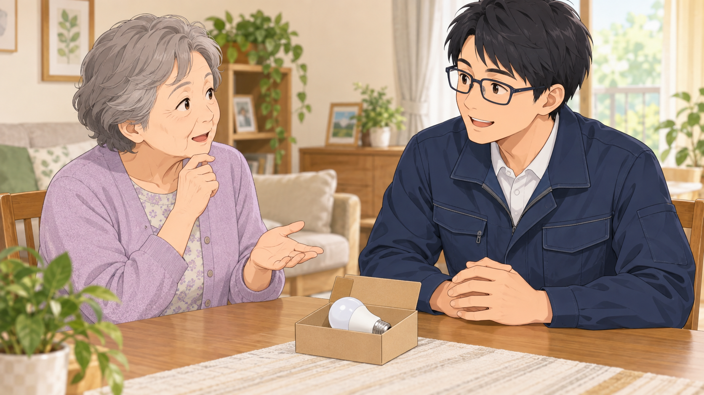

/ 物件資料の比較
候補の物件がいくつかあるとき。比べる前に確認項目をそろえるメモ
物件購入前の相談で、候補ごとの資料や回答を同じ項目に並べる方法。確認済み・未確認・自分の印象を分け、次に聞きたい質問を整理します。
記事を読む記事一覧
相談前の準備や、依頼するときに伝えたいことをまとめています。
/ 物件資料の比較
物件購入前の相談で、候補ごとの資料や回答を同じ項目に並べる方法。確認済み・未確認・自分の印象を分け、次に聞きたい質問を整理します。
記事を読む/ 予算の伝え方
家具組立や水栓交換などの相談で、予算の目安と上限をどう伝えるか。商品代・部品代・作業代のどこまで含めた金額かを整理するメモです。
記事を読む/ 退去前の資料整理
賃貸の退去前相談に向けて、手元の書類・受け取った案内・まだ確認していない資料を整理。全部そろえる前に、何を相談したいかを伝える方法です。
記事を読む/ 家具組立の依頼範囲
家具の組立と、届いた箱や梱包材の片付けは分けて相談。まとめる場所、持ち帰りの希望、残したい説明書などを伝えて依頼範囲を確認するメモです。
記事を読む/ 相談の再開
いったん保留にした家具組立や水栓交換の相談を再開するとき、前回の話と現在の状況をつなぐ方法。商品・依頼範囲・希望日を確認するメモです。
記事を読む/ 水栓交換の希望
水栓交換の相談では、交換理由だけでなく、普段の使い方や気に入っている点も共有。変えたいことと残したいことを分けて希望を伝える方法を紹介します。
記事を読む/ 見積書の読み合わせ
原状回復や修繕の見積書に知らない言葉があったとき、項目名をそのまま引用して、対象の場所・作業内容・写真との対応を確認するためのメモです。
記事を読む/ 最初の連絡
部屋全体を写したくない、今は写真を用意できない。住まいの用事を相談するときに、文章で伝えたい場所・対象・希望と、写真が必要な場合の確認方法を紹介します。
記事を読む/ 家具の説明書
家具の説明書をなくした、途中のページしかない。そんなときに、商品名や型番、残っている資料を整理して組立の対応可否を相談する方法です。
記事を読む/ 依頼後の連絡
訪問を相談した後で予定が変わったときに伝えたいこと。日程変更とキャンセルを分け、部品手配の状況や費用について確認するためのメモです。
記事を読む/ 物件購入前の整理
購入を考える物件を見た後、印象だけで話を終わらせず、見たこと・暮らしの希望・確認したいことを分けて整理する相談メモです。
記事を読む/ 照明の相談
複数の照明を相談するときは、場所ごとに番号を付けて写真と希望を整理。交換用電球の写真との区別や、相談内容を追加するときの書き方を紹介します。
記事を読む/ 家具の軽い移動
家具の軽い移動を相談するときに伝えたい、家具の種類・現在の場所・移動先。組立や搬入と希望を分けて、対応範囲を確認するメモです。
記事を読む/ 賃貸管理の連絡
賃貸管理の電話相談後に、話した相手・回答・次の連絡を短く整理する方法。聞いたことと自分の理解を分けて残すメモの例を紹介します。
記事を読む/ 相談から依頼まで
LINE写真相談、現地での確認、実際の作業。それぞれの段階で、何をお願いするかと費用を確認するための相談メモです。
記事を読む/ 窓まわり
窓まわりの相談では、開けるとき・閉めるとき・鍵を掛けるときの違いを言葉に。気になる動きと、いつから感じるかを整理するメモです。
記事を読む/ 作業後の記録
水栓交換や家具組立などの後に、作業した場所・内容・商品情報を一緒に残す方法。次に住まいの相談をするときのための簡単なメモを紹介します。
記事を読む/ 家具の商品情報
家具組立の相談では、商品ページのURLに加えて、選んだサイズや仕様、点数を共有しましょう。購入した家具を伝えるためのメモと例文を紹介します。
記事を読む/ 賃貸オーナー向け
原状回復などの見積書が更新されたときに、受領日・変更箇所・添付写真を整理して、管理会社への質問をまとめるための相談メモです。
記事を読む/ 家族との情報共有
家族の家の電球交換や家具組立を相談するときに、本人の希望、現地で分かっていること、連絡を受ける人を整理するメモです。
記事を読む/ 依頼内容の整理
家具組立や電球交換など、相談したい用事が複数あるときのまとめ方。先に頼みたいことと、費用を聞いてから決めたいことを分けて伝えましょう。
記事を読む/ スイッチ交換
スイッチ交換の実績を、交換前・作業中・取付後の写真3枚でご紹介します。
写真と記事を見る/ キッチン水栓交換
施工前・施工中・施工後の写真3枚で、キッチン水栓交換の実績をご紹介します。
写真と記事を見る/ 窓まわりの作業実績
戸車調整・潤滑油の注入・建付け調整を担当した現場を、写真2枚でご紹介します。
現場写真と記事を見る/ 工事実績の見方
公開中の写真3枚で、見た目の変化と担当範囲を確認。自宅の相談につなげる見方を紹介します。
記事を読む/ 賃貸オーナー向け
回答済み・確認中・記載なしを分けて、次に聞くことを短くまとめましょう。
記事を読む/ 訪問日程
希望日が1日だけでも大丈夫。在宅できる時間や商品の到着予定など、日程相談で伝えたいことをまとめました。
記事を読む
/ 電球交換
ほかの用事とまとめなくても大丈夫。電球の準備や料金など、小さな依頼で気になることを整理しました。
記事を読む/ 家具組立
説明書のどこで止まったか、今はどんな状態か。組立途中の家具を相談するときの伝え方をまとめました。
記事を読む/ 浴室水栓
商品情報、今の水栓の写真、依頼したい範囲。相談を始めるための3つの準備をご紹介します。
記事を読む